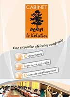

Le Kolatier 2013 accueille le SIMA
Biennale créée en 2003 par l’association camerounaise REPAC, le Kolatier est devenu en 2010 le « Marché des musiques d’Afrique ». Evénement conventionné par le gouvernement du Cameroun, à travers le ministère des Arts et de la Culture, l’objectif du Kolatier est d’offrir une meilleure vitrine aux groupes musicaux émergents d’Afrique et de contribuer à leur professionnalisation. Lors de sa dernière édition en 2010, le Kolatier a regroupé 50 professionnels et 15 groupes musicaux, et 24 pays étaient représentés !
Depuis 2009, l’association REPAC est le membre correspondant du BEMA (Bureau Export de la Musique Africaine) pour l’Afrique Centrale. C’est donc tout naturellement que les producteurs d’Afrique de l’Ouest et d’Afrique Centrale s’unissent pour la tenue au Kolatier du salon itinérant SIMA 2013!
Rapport vidéo
Rapport- Partie 1
Rapport- Partie 2
Le programme
28 OCTOBRE |
|||
|---|---|---|---|
| 09:00 ► 13:00 | Ateliers | Musique et numérique / Music and digital | Institut Français |
| 11:00 ► 12:00 | Conférences | Conférence de presse / Press Conference | Centre Culturel Camerounais |
| 15:00 ► 19:00 | Ateliers | Musique et numérique / Music and digital | Institut Français |
29 OCTOBRE |
|||
|---|---|---|---|
| 09:00 ► 13:00 | Ateliers | Musique et numérique / Music and digital | Institut Français |
| 15:00 ► 19:00 | Ateliers | Musique et numérique / Music and digital | Institut Français |
30 OCTOBRE |
|||
|---|---|---|---|
| 09:00 ► 13:00 | Rencontres professionnelles | Présentation du SIMA au Kolatier / Presentation of the SIMA at the Kolatier | Centrale de lecture publique |
| 10:00 ► 11:00 | Tables rondes | Musique et TIC / Music and ICT | Centrale de lecture publique |
| 16:00 ► 16:30 | Show case | Show case #1 | Institut Français |
| 17:00 ► 17:30 | Show case | Show case #2 | Institut Français |
| 18:00 ► 18:30 | Show case | Show case #3 | Institut Français |
31 OCTOBRE |
|||
|---|---|---|---|
| 09:00 ► 10:00 | Tables rondes | Economie de la musique / Music's Economy | Centrale de lecture publique |
| 11:00 ► 12:00 | Tables rondes | Circulation des artistes africains / Circulation of African artists | Centrale de lecture publique |
| 15:00 ► 16:00 | Rencontres professionnelles | Speed Meeting #1 | Centrale de lecture publique |
| 16:00 ► 16:30 | Show case | Show case #4 | Institut Français |
| 17:00 ► 17:30 | Show case | Show case #5 | Institut Français |
| 18:00 ► 18:30 | Show case | Show case #6 | Institut Français |
| 21:00 ► 22:00 | Concerts | Concert #1 | Palais des Sports |
| 22:00 ► 23:00 | Concerts | Concert #2 | Palais des Sports |
| 23:00 ► 00:00 | Concerts | Concert #3 | Institut Français |
01 NOVEMBRE |
|||
|---|---|---|---|
| 10:00 ► 11:00 | Tables rondes | Les marchés de la musique / Music's market | Centrale de lecture publique |
| 11:00 ► 13:00 | Rencontres professionnelles | Le Conseil Francophone de la Chanson - Bilan | Centrale de lecture publique |
| 15:00 ► 16:00 | Rencontres professionnelles | Speed Meeting #2 | Centrale de lecture publique |
| 16:00 ► 16:30 | Show case | Show case #7 | Institut Français |
| 17:00 ► 17:30 | Show case | Show case #8 | Institut Français |
| 18:00 ► 18:30 | Show case | Show case #9 | Institut Français |
| 21:00 ► 22:00 | Concerts | Concert #4 | Palais des Sports |
| 22:00 ► 23:00 | Concerts | Concert #5 | Palais des Sports |
| 23:00 ► 00:00 | Concerts | Concert #6 | Palais des Sports |
| 00:00 ► 01:00 | Concerts | Concert #7 | Palais des Sports |
02 novembre |
|||
|---|---|---|---|
| 15:00 ► 16:00 | Rencontres professionnelles | Speed Meeting #3 | Centrale de lecture publique |
| 16:00 ► 16:30 | Show case | Show case #10 | Institut Français |
| 17:00 ► 17:30 | Show case | Show case #11 | Institut Français |
| 18:00 ► 18:30 | Show case | Show case #12 | Institut Français |
| 21:00 ► 22:00 | Concerts | Concert #8 | Palais des Sports |
| 22:00 ► 23:00 | Concerts | Concert #9 | Palais des Sports |
| 00:00 ► 01:00 | Concerts | Concert #10 | Palais des Sports |


Le Marché des musiques d'Afrique
Le Marché des Musiques d’Afrique est une plateforme de rencontres et d’échanges entre les groupes musicaux d’Afrique et les professionnels en provenance de plusieurs continents. Le marché vise à offrir une meilleure vitrine aux groupes émergents d’Afrique, qui souffrent encore d’une faible visibilité.
Il se tient tous les deux ans dans une ville africaine, et développe les activités ci-après :
- des conférences sur les thèmes actuels concernant les musiques d’Afrique
- le salon professionnel (espace aménagé pour les expositions et la promotion des œuvres et services
- les speed meeting : têtes à têtes organisés pour favoriser les collaborations et autres partenariats
- des concerts show cases offerts au public et aux professionnels présents (directeurs de festivals, labels, distributeurs, éditeurs, journalistes, agents, responsables d’institutions etc…)
- des rencontres de réseau
Les groupes musicaux émergents sont sélectionnés sur appel à candidature. Le comité de sélection propose les groupes à même d’intéresser les diffuseurs. Le comité de programmation valide la liste et ajoute à la programmation officielle des têtes d’affiches pour assurer à l’évènement un caractère plus festif à l’attention du public.
Le Marché des Musiques d’Afrique bénéficie de la caution et du partenariat de quelques institutions culturelles reconnues :
- CERDOTOLA : Centre de recherche et de documentation pour la tradition orale et les langues africaines
- OCPA : Observatoire des politiques culturelles en Afrique
- CFC : Conseil Francophone de la Chanson
- EFWMF : European Forum of Worldwide Music Festivals
- CIM: Conseil International de la Musique
- Zone Franche : Réseau des professionnels de la Musique

Nos partenaires
Le cabinet
 Créé en 2011, le cabinet le Kolatier travaille dans les domaines ci-dessous :
- Ingénierie culturelle
- Evènementiel
- Projets de développement.
Les différentes activités auxquelles il s’emploie sont les suivantes :
La production d’évènements : évènements initiés par le cabinet ou produits pour le compte des tiers : entreprises, réseaux, organisations professionnels, associations, individus, familles… (Séminaires, colloques, évènements culturels, salons, foires, rencontres de toutes natures)
La régie d’évènements : contacts avec tous les sous traitants et intervenants, coordination technique et administrative, etc…
L’accompagnement : nous sommes à vos côtés pour contribuer à la réussite de vos projets sur la durée.
L’intermédiation : mise en contact, suivi de vos projets, représentation, négociations…
La promotion : vos produits et projets culturels ont besoin d’être connus de votre cible. Nous nous en chargeons sur le plan national et international.
L’audit des demandes de sponsoring : nous examinons pour le compte des entreprises les dossiers pour dégager les forces et faiblesses, et nous donnons des avis motivés pour vous permettre de prendre la bonne décision
L’évaluation d’impact : Si votre image est associée à un évènement ou un produit, nous assurons le suivi pour dégager l’impact sur le public.
Les études et les conseils : (arts et cultures, évènements)